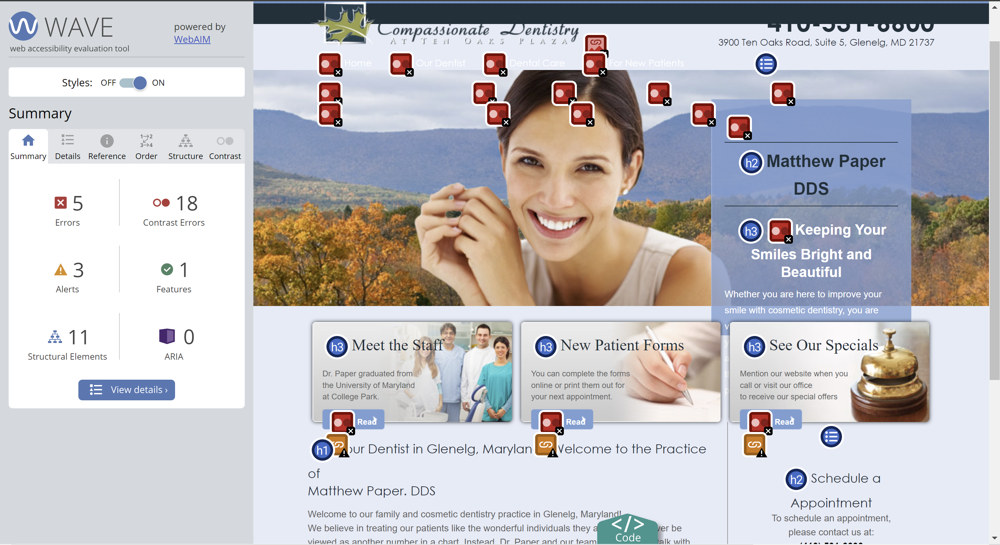
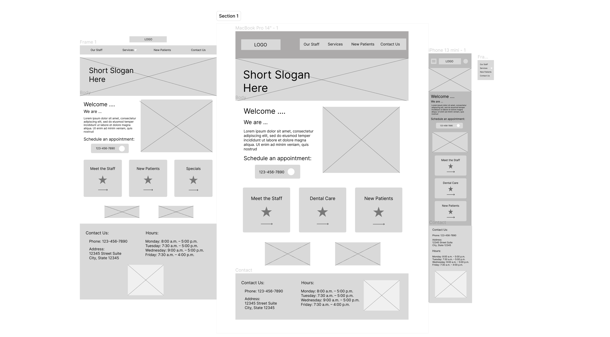
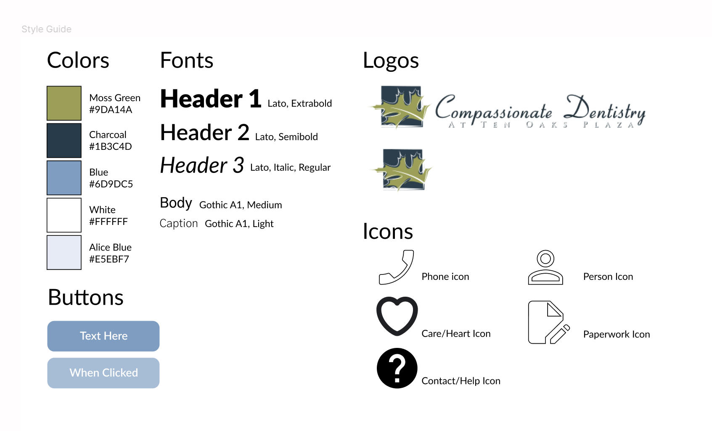

Responsive Redesign: Compassionate Dentistry
Design and Develop Redesign for Webpage

What does it mean to redesign a website? I undertook this question by exploring the workflow of redesigning a website through brainstorming, sketching, wireframing, and coding a final design. I focused on redesigning a website to prioritize the user’s needs, improve accessibility, and enhance the aesthetics of the site.
I chose to redesign a local dentistry website linked here it's an important tool for users to access health care and resources. Having an easy to use, accessible interface is vital for websites pertaining to medicine.
I broke down my research into UX design principles and accessibility to target specific parts of the current design that could be improved for a better user experience, although many of the considerations I found overlap between the two ideas.
Using three principles of UX design, efficiency, learnability, and memorability, I analyzed the website.
I used WebAIM to learn about the accessibility of this site. I found:
Using the information gathered from WebAIM and assessing the design aspects of the page, I next crafted lo fi wireframes to improve usability.
I created low-fidelity wireframes: one for desktop, one for tablet, and one for mobile. The most notable changes I made were creating views for desktop, tablet, and mobile, and ensuring that the content took up the full width of the page which allowed me to increase text size, increase image size, and spread out information for a cleaner feel for the website.
These are my wireframes for tablet (left), desktop (middle), and mobile (right):
After creating low-fidelity wireframes, I put together a style guide for the website redesign. I knew that I wanted to give the website a similar feel to the original site. To do this, I took into account the logo colors and website colors while also making new choises for font, icons, and some other colors.
I used my lo fi wireframes and research about accessibility and design to put together final hi fi wireframes. Then, I used these wireframes to code the website using HTML and CSS which you can find here. This website is a culmination of the important choices I made throughout the process ensuring that users can get to information easily and all users on a variety of devices are able to access the information easily.

Throughout this process, I learned the full workflow of creating a redesign for a website, from brainstorming to a final front-end product. This process taught me the importance of and skills for designing with a user in mind, applying design principles, and coding a responsive site.
For this site in particular because it relates to healthcare, having a clear website that works on a variety of devices is extremely important to reach as many people as possible. By incorporating features such as contrasting colors, HTML5 semantic elements, and descriptive alt tags for images, my redesign aims to enhance user experience and ensure that the site is accessible to a diverse audience.
The skills acquired during this project are vital going forward to allow me to confidently approach any future project and have a comprehensive understanding of how the elements of the design process help to produce effective outcomes.